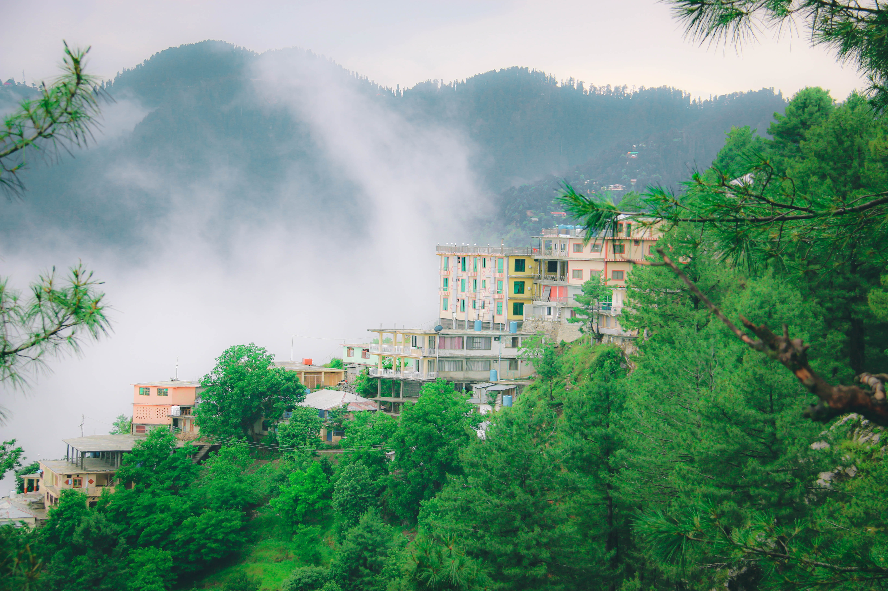

Murree, a charming hill station nestled in the Pir Panjal Range of the Himalayas in Pakistan's Punjab province, is celebrated for its stunning natural beauty. At an altitude of approximately 7,516 feet above sea level, it offers lush green hills, dense forests, and magnificent views of snow-capped peaks during the winter months. The town boasts a temperate climate, drawing tourists year-round. Notable attractions like Pindi Point, Kashmir Point, and Mall Road, along with opportunities for trekking, horseback riding, and camping, make Murree a destination for nature lovers and outdoor enthusiasts alike. With a rich historical legacy and easy access from Islamabad and Rawalpindi, Murree is a favorite weekend escape, offering a blend of culture, adventure, and tranquility for visitors.
Murree is a beautiful hill station in Pakistan with several must-visit attractions. Here's a list of some of the most popular and captivating places to explore in and around Murree:
Pindi Point: Offering stunning panoramic views of the surrounding hills and valleys, this point is a great place to start your exploration.
Kashmir Point: Known for its breathtaking views of the Kashmir Valley, this spot is especially picturesque during sunset.
Mall Road: This bustling market street is ideal for shopping and sampling local cuisine. It's a vibrant hub for tourists.
Peshawar Point: Another viewpoint with spectacular vistas, it's a great spot for photography and taking in the natural beauty.
Nathia Gali: Located near Murree, this lush, pine-covered hill station offers a serene escape with hiking and scenic beauty.
Luxury Hotels and Resorts: For travelers seeking a premium experience, there are luxury hotels and resorts offering top-notch amenities such as spas, fine dining restaurants, and scenic views.
Mid-Range Hotels and Lodges: Murree has a range of mid-range hotels and lodges that provide comfortable and convenient stays with amenities such as Wi-Fi, room service, and often picturesque views.
Budget Hotels and Guesthouses: Budget-friendly options like guesthouses and smaller hotels cater to those looking for economical yet comfortable stays. They often provide essential amenities and a cozy environment.
Cottages and Vacation Rentals: Some visitors prefer the privacy and flexibility offered by renting cottages or vacation homes. These are ideal for families or groups looking for a more homely atmosphere
Kashmiri Chai: A pink, aromatic tea made with green tea leaves, milk, and a pinch of baking soda. It's often served with a side of girda (a type of bread).
Pakoras: Deep-fried snacks made from gram flour and various ingredients like potatoes, onions, or spinach, seasoned with spices.
Gloria Jeans Coffees: This popular international chain offers a selection of coffees, snacks, and sandwiches. It's a great place to relax and enjoy a cup of coffee.
Pearl Continental Hotel: The hotel's restaurants offer a range of international and local cuisines. Enjoy fine dining with beautiful views of the surrounding landscapes.
For More Information